<!DOCTYPE html>


<html lang="cn">
  

    <head>
      <meta charset="utf-8" />
        
      <meta
        name="viewport"
        content="width=device-width, initial-scale=1, maximum-scale=1"
      />
      <title>深度召回算法 |  HomePage</title>
  <meta name="generator" content="hexo-theme-ayer">
      
      <link rel="shortcut icon" href="/favicon.ico" />
       
<link rel="stylesheet" href="/dist/main.css">

      <link
        rel="stylesheet"
        href="https://cdn.jsdelivr.net/gh/Shen-Yu/cdn/css/remixicon.min.css"
      />
      
<link rel="stylesheet" href="/css/custom.css">
 
      <script src="https://cdn.jsdelivr.net/npm/pace-js@1.0.2/pace.min.js"></script>
       
 

      <link
        rel="stylesheet"
        href="https://cdn.jsdelivr.net/npm/@sweetalert2/theme-bulma@5.0.1/bulma.min.css"
      />
      <script src="https://cdn.jsdelivr.net/npm/sweetalert2@11.0.19/dist/sweetalert2.min.js"></script>

      <!-- mermaid -->
      
      <style>
        .swal2-styled.swal2-confirm {
          font-size: 1.6rem;
        }
      </style>
    </head>
  </html>
</html>


<body>
  <div id="app">
    
      
      <canvas width="1777" height="841"
        style="position: fixed; left: 0px; top: 0px; z-index: 99999; pointer-events: none;"></canvas>
      
    <main class="content on">
      <section class="outer">
  <article
  id="post-深度召回算法"
  class="article article-type-post"
  itemscope
  itemprop="blogPost"
  data-scroll-reveal
>
  <div class="article-inner">
    
    <header class="article-header">
       
<h1 class="article-title sea-center" style="border-left:0" itemprop="name">
  深度召回算法
</h1>
 

      
    </header>
     
    <div class="article-meta">
      <a href="/2020/04/04/%E6%B7%B1%E5%BA%A6%E5%8F%AC%E5%9B%9E%E7%AE%97%E6%B3%95/" class="article-date">
  <time datetime="2020-04-04T13:32:12.000Z" itemprop="datePublished">2020-04-04</time>
</a> 
  <div class="article-category">
    <a class="article-category-link" href="/categories/ML/">ML</a> / <a class="article-category-link" href="/categories/ML/%E8%AE%BA%E6%96%87%E9%98%85%E8%AF%BB/">论文阅读</a>
  </div>
  
<div class="word_count">
    <span class="post-time">
        <span class="post-meta-item-icon">
            <i class="ri-quill-pen-line"></i>
            <span class="post-meta-item-text"> Word count:</span>
            <span class="post-count">3.4k</span>
        </span>
    </span>

    <span class="post-time">
        &nbsp; | &nbsp;
        <span class="post-meta-item-icon">
            <i class="ri-book-open-line"></i>
            <span class="post-meta-item-text"> Reading time≈</span>
            <span class="post-count">12 min</span>
        </span>
    </span>
</div>
 
    </div>
      
    <div class="tocbot"></div>


  
    <div class="article-entry" itemprop="articleBody">
       
  <h2 id="一简介">一、简介</h2>
<p>推荐系统的基本架构一般由索引、召回、粗排、精排、重排等几个部分构成，而其中的召回阶段（或者称之为Matching阶段）则主要负责根据用户和内容特征，从众多的内容库中找到用户可能感兴趣的内容。传统的召回算法，如ItemCF等，大多基于统计的方法来计算item之间的相似度，根据用户近期买过的商品进行召回。传统召回算法实现成本低，模型简单响应速度快，但是基于数据统计得到的相似关系缺乏个性化能力，召回商品的发现性，多样性较低。 近年来，随着深度学习的兴起，一些深度召回算法被提出。它们利用深度模型表达能力高，特征提取能力强的特点，提高了个性化召回算法的效果。最初的深度召回算法主要通过深度神经网络挖掘用户和商品在低维表示空间上的相似性，为用户召回低维表示相似的商品，这类方法我们往往称之为向量化召回算法。相比于基于数据统计的相似性计算，向量化召回的个性化程度更高，召回商品的发现性和多样性也较高。还有一些深度召回算法尝试建立商品之间的关系图，通过基于图的深度网络学习，从拓扑关系的角度捕捉商品之间的相关性，这类方法我们称之为基于图的深度召回算法。最后，还有一些方法致力于攻克深度模型带来的性能开销，使得深度模型能够在大规模的召回场景中可用，比如通过树结构和哈希的方法对召回的过程进行提速等等，这类方法我们称之为大规模深度召回算法。本文就从这三类方法展开，介绍一些现有的深度召回算法。</p>
<a id="more"></a>
<h2 id="二分类">二、分类</h2>
<ul>
<li><p>DeepMatch youtube在2016年提出了用深度模型进行多分类的监督训练，得到item和user的embedding最后在线上通过内积进行召回检索，算是深度模型时代向量化召回的开端。本文中将通过分类任务监督训练得到embedding最后通过内积进行检索的方法都归到这一类</p></li>
<li><p>Graph-based 这类方法大多同样是产出item和user的embedding，最后通过向量内积进行召回检索。但是这类方法引入图的结构来描述item和user之间的关系，他们声称相比于直接进行分类训练，引入了额外的拓扑信息。</p></li>
<li><p>Large-scale 这类方法可能属于上面两类方法，但是他们着重处理Large-scale的问题，致力于缩短召回检索的开销。</p></li>
</ul>
<h2 id="三deepmatch">三、DeepMatch</h2>
<h3 id="deep-neural-networks-for-youtube-recommendations.-recsys-2016">1. Deep neural networks for youtube recommendations. (RecSys 2016)</h3>
<p><strong>结构和特征</strong> 本文提出了一个较为基础的个性化向量召回算法，结构如下 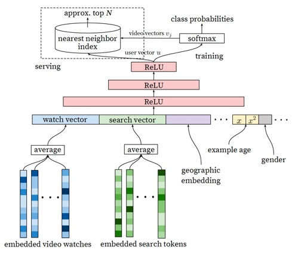</p>
<p>主要特征： (a) 历史搜索query：把历史搜索的query分词后的token的embedding向量进行加权平均 (b) 人口统计学信息：性别、年龄、地域等 (c) 其他上下文信息 (d) Age信息：视频上传时间，保证时效性。</p>
<p><strong>训练和生效</strong> 离线训练时把问题建模成一个多分类问题，对用户U和上下文C，预测视频V是否点击，数学表示如下：  其中u和v为用户和商品的embedding，内积后进行softmax多分类。最后线上生效直接使用内积选取Top—N的视频。</p>
<h3 id="sequential-deep-matching-model-for-online-large-scale-recommender-system.-cikm-2019">2. Sequential Deep Matching Model for Online Large-scale Recommender System. (CIKM 2019)</h3>
<p>本文相比于上面Youtube的工作，引入了用户行为序列的信息进行序列化建模。示意图如下 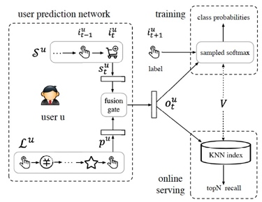 对于user，这边用user prediction network（上图虚线框）来提取用户向量，user prediction network中，使用Attention来提取用户长周期的特征(防止遗忘)，使用LSTM提取短周期的特征(注重实效)，最后通过一个门结构将长短周期和user embedding进行混合得到最终的用户向量表示。</p>
<h2 id="四graph-based">四、Graph-based</h2>
<h3 id="billion-scale-commodity-embedding-for-e-commerce-recommendation-in-alibaba.-kdd-2018">1. Billion-scale Commodity Embedding for E-commerce Recommendation in Alibaba. (KDD 2018)</h3>
<p>本文提出了一种基于图网络的低维表示提取方法，并且提出了两种改进方案。 提取的低维表示用于做个性化召回检索</p>
<h4 id="bge">BGE</h4>
<p>首先最基础的图网络提取低维表示的方法，BGE（Base Graph Embedding）如下： (1) 构建图：商品为点，用户行为为边，构建带权图，表示商品之间的关联。 (2) 采样：在图上进行Random walk的采样，得到一些商品序列，相关的商品在序列中同时出现的概率较高 (3) 训练：将采样得到的商品序列当做句子，其中每一个商品当做一个词、用NLP中的Skip-gram方法进行训练，得到每一个词的词向量，也就是每一个商品的向量。 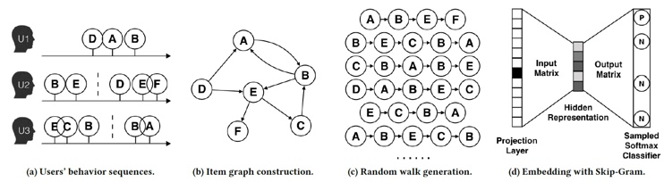</p>
<h4 id="ges-eges">GES &amp; EGES</h4>
<p>上述的BGE方法难以处理冷启动的问题，新商品没有任何点击，无法产生有效的低维表示。 为了解决这个问题，本文提出了改进方案GES（Graph Embedding with Side information） 相比于只对商品学习低维表示，本方法还一并学习商品的其他属性信息。如下图SI0为item_id信息，SI1可能是store_id信息，etc. 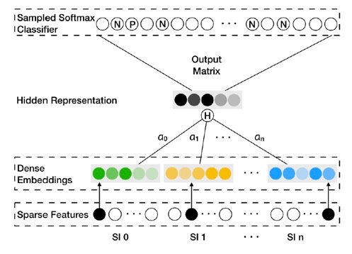 最终一个商品的低维表示由所有的Side Information向量求均值得到： 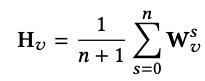</p>
<p>而EGES（Enhanced Graph Embedding with Side information）是GES的改进，认为不同的Information有着不同的重要性，最终商品的低维表示是各个Side Information的向量加权求和得到，权值也在训练中学习。 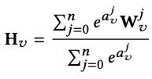</p>
<h3 id="graph-convolutional-neural-networks-for-web-scal-recommender-systems.-kdd-2018">2. Graph Convolutional Neural Networks for Web-Scal Recommender Systems. (KDD 2018)</h3>
<p>本文提出用图卷积网络来提取商品的低维表示。 图的构建方式还是同上，商品为点，用户行为作为边，构建一个图。但是本文用图卷积来生成一个商品的向量，即一个商品的向量通过他的近邻混合得到。下图展示了一个2层的图卷积，对于商品A，他的近邻是BCD，而BCD的近邻分别又是AC，ABEF，A。则商品A的最终向量由两层级的卷积操作得到。 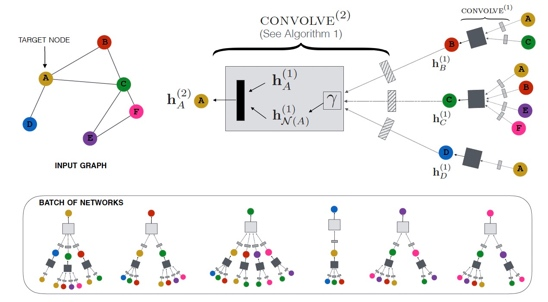 一次卷积操作的过程如下，实际上就是对所有近邻的向量过一层全连接，然后通过pooling得到<span class="math inline">\(n_u\)</span>，然后将目标向量<span class="math inline">\(z_u\)</span>和<span class="math inline">\(n_u\)</span> concat之后再过一个全连接，得到新的目标向量<span class="math inline">\(z_n^{new}\)</span> 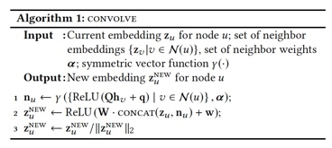</p>
<p>训练使用了max-margin ranking loss，数据组织为<span class="math inline">\(&lt;i,j,l&gt;\)</span>，其中<span class="math inline">\(&lt;i,j&gt;\)</span>为一个商品对，<span class="math inline">\(l\)</span>为label，表示这一对商品是否相关。</p>
<h2 id="五largescale">五、Large—Scale</h2>
<h3 id="candidate-generation-with-binary-codes-for-large-scale-top-n-recommendation.-cikm-2019">1. Candidate Generation with Binary Codes for Large-Scale Top-N Recommendation. (CIKM 2019)</h3>
<p>本文侧重关注召回检索的效率，结合哈希检索和向量化召回。通过对输出向量施加逐渐逼近符号函数的约束，使得生成的向量是二值的，以便使用哈希检索结构Multi-Index Hashing进行检索。这种检索方法的耗时与总商品数据量是一种次线性的关系。</p>
<p>本文其他部分与大多数DeepMatch类的算法相似，但是最后内积计算分类loss之前，对商品和用户向量施加一个符号函数<span class="math inline">\(sgn(x)\)</span>来让输出的向量成为二值的。但是，符号函数不可导，这里就用带参数的tanh函数来进行逼近，随着训练epoch逐渐增加参数<span class="math inline">\(\beta\)</span>大小，使其逼近符号函数<span class="math inline">\(sgn\)</span>。损失函数和训练过程如下图。 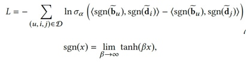 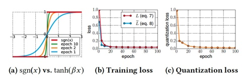</p>
<h3 id="learning-tree-based-deep-model-for-recommender-systems.-kdd-2018">2. Learning tree-based deep model for recommender systems. (KDD 2018)</h3>
<p>向量化召回由于使用向量内积作为最后的结果，表达能力有限，因此难以取得较好的个性化效果。如果使用深度模型，则超大的候选集合使得线上的延迟难以接受。本文结合了最大堆树和深度模型，提出了TDM算法。将庞大数量的商品分配到树的各个叶子节点，每个中间节点相当于其子节点商品的一个抽象表示，通过BeamSearch的方法对树结构进行高效检索。选取Top-K的商品，只需要深度模型做<span class="math inline">\(Klog(N)\)</span>次预测。 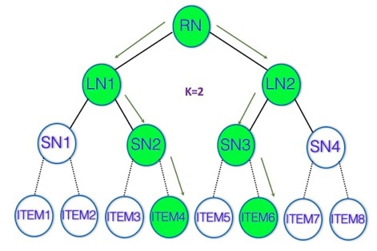</p>
<p>在训练过程中，每一个中间节点也被当做一个普通的item进行处理。 具体的训练方式是 树的结构 和 深度模型 交替进行更新。 当树的结构固定时，对于一条样本，如果用户点击了一个item，则这个item的搜索父节点也被视作点击。如此便可构造数据集对深度模型进行训练。 而树的结构，则是通过对当前的embedding进行聚类得到。 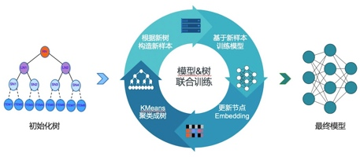</p>
<h3 id="joint-optimization-of-tree-based-index-and-deep-model-for-recommender-systems.-nips-2019">3. Joint Optimization of Tree-based Index and Deep Model for Recommender Systems. (NIPS 2019)</h3>
<p>本文是对上面TDM算法的改进。上面TDM算法中，树的构建和深度模型的训练是分隔开的，目标并不相同，可能两者的优化相互牵制导致总体效果次优。 本文主要有两个改进： 1.树结构、深度模型联合优化 通过最大似然构建联合优化的loss function。其中树结构的优化难以求解，转化为带权二部图的最大匹配问题，通过贪心算法求解。 2.用户序列特征分层建模 深度模型中用到了用户的行为序列，TDM中训练数的中间层时在序列特征方面也是用的item_id粒度的序列特征。在本文中改进为使用当前层的embedding作为序列的特征。这样可以减少每层训练的噪声，并且可以从粗到细的精准建模。</p>
<h2 id="六总结">六、总结</h2>
<h4 id="deep-neural-networks-for-youtube-recommendations">1. Deep neural networks for youtube recommendations</h4>
<p>方法名：无 动机：使用深度模型进行个性化的召回，同时保证效率 方法：通过深度模型多分类任务训练，得到用户和商品的向量，用向量内积做召回检索。</p>
<h4 id="sequential-deep-matching-model-for-online-large-scale-recommender-system">2. Sequential Deep Matching Model for Online Large-scale Recommender System</h4>
<p>方法名：SDM 动机：建模用户行为序列 方法：引入用户长短期行为序列，分别用Attention和LSTM结构进行建模，最终进行向量召回。</p>
<h4 id="billion-scale-commodity-embedding-for-e-commerce-recommendation-in-alibaba.">3. Billion-scale Commodity Embedding for E-commerce Recommendation in Alibaba.</h4>
<p>方法名：BGE，GES，EGES 动机：使用图网络表示商品之间的关系，再学习商品的低维表示 方法：使用用户行为建图，通过采样得到多条商品轨迹。将轨迹当成句子，商品当做词，通过NLP中求解词向量的方法求解商品向量。并且使用商品其他属性的向量来缓解冷启动问题。</p>
<h4 id="graph-convolutional-neural-networks-for-web-scal-recommender-systems.">4. Graph Convolutional Neural Networks for Web-Scal Recommender Systems.</h4>
<p>方法名：PinSage 动机：使用图表示商品之间的关系，再使用图卷积网络学习商品的低维表示 方法：每一个商品的embedding由其近邻的embedding通过图卷积操作得到。通过max-margine ranking loss进行训练。</p>
<h4 id="candidate-generation-with-binary-codes-for-large-scale-top-n-recommendation.">5. Candidate Generation with Binary Codes for Large-Scale Top-N Recommendation.</h4>
<p>方法名：CICAR 动机：通过高效哈希检索结构来提升召回的效率 方法：使用次线性复杂度的哈希检索方法Multi-index hashing，需要embedding是二值的。因此在现有双塔内积网络的基础上，使用一个近似符号函数的映射函数<span class="math inline">\(tanh_\beta\)</span>将输出的向量映射到二值。</p>
<h4 id="learning-tree-based-deep-model-for-recommender-systems.">6. Learning tree-based deep model for recommender systems.</h4>
<p>方法名：TDM 动机：通过内积进行召回表达能力有限，使用深度模型打分则商品太多开销过大。 方法：在全部N个商品集合上构建树的结构，在树上通过BeamSearch进行检索TopK商品，深度模型只需要预测<span class="math inline">\(Klog(N)\)</span>次。树的中间节点是商品的抽象，当做商品一次训练，其label来自于子节点。深度模型和树结构交替训练。</p>
<h4 id="joint-optimization-of-tree-based-index-and-deep-model-for-recommender-systems.">7. Joint Optimization of Tree-based Index and Deep Model for Recommender Systems.</h4>
<p>方法名：JTM 动机：TDM中深度模型和树结构训练是完全分隔开的，目标不同可能导致相互牵制无法训练到最优。 方法：构建统一loss function，深度模型和树结构联合优化。树结构的优化是个较难的组合优化问题，转化为带权二部图匹配问题后用贪心算法求解。</p>
<h2 id="七结语">七、结语</h2>
<p>本文介绍了近几年内的一些深度召回算法，主要把它们划分成“Deep Matching类算法”、“基于图的算法”、“面向大规模场景算法”3类算法，并对这3类算法进行归纳和总结，分析他们的动机、做法和优缺点。深度学习在推荐系统中的应用是近年来持续的热门研究课题，每年都会有大量新技术和新模型出现。我们希望这篇文章能帮助读者对这个领域有一个大致的了解，并为未来的研究提供一些思路和参考。</p>
 
      <!-- reward -->
      
      <div id="reword-out">
        <div id="reward-btn">
          Donate
        </div>
      </div>
      
    </div>
    

    <!-- copyright -->
    
    <div class="declare">
      <ul class="post-copyright">
        <li>
          <i class="ri-copyright-line"></i>
          <strong>Copyright： </strong>
          
          Copyright is owned by the author. For commercial reprints, please contact the author for authorization. For non-commercial reprints, please indicate the source.
          
        </li>
      </ul>
    </div>
    
    <footer class="article-footer">
       
<div class="share-btn">
      <span class="share-sns share-outer">
        <i class="ri-share-forward-line"></i>
        分享
      </span>
      <div class="share-wrap">
        <i class="arrow"></i>
        <div class="share-icons">
          
          <a class="weibo share-sns" href="javascript:;" data-type="weibo">
            <i class="ri-weibo-fill"></i>
          </a>
          <a class="weixin share-sns wxFab" href="javascript:;" data-type="weixin">
            <i class="ri-wechat-fill"></i>
          </a>
          <a class="qq share-sns" href="javascript:;" data-type="qq">
            <i class="ri-qq-fill"></i>
          </a>
          <a class="douban share-sns" href="javascript:;" data-type="douban">
            <i class="ri-douban-line"></i>
          </a>
          <!-- <a class="qzone share-sns" href="javascript:;" data-type="qzone">
            <i class="icon icon-qzone"></i>
          </a> -->
          
          <a class="facebook share-sns" href="javascript:;" data-type="facebook">
            <i class="ri-facebook-circle-fill"></i>
          </a>
          <a class="twitter share-sns" href="javascript:;" data-type="twitter">
            <i class="ri-twitter-fill"></i>
          </a>
          <a class="google share-sns" href="javascript:;" data-type="google">
            <i class="ri-google-fill"></i>
          </a>
        </div>
      </div>
</div>

<div class="wx-share-modal">
    <a class="modal-close" href="javascript:;"><i class="ri-close-circle-line"></i></a>
    <p>扫一扫，分享到微信</p>
    <div class="wx-qrcode">
      
    </div>
</div>

<div id="share-mask"></div>  
  <ul class="article-tag-list" itemprop="keywords"><li class="article-tag-list-item"><a class="article-tag-list-link" href="/tags/ML/" rel="tag">ML</a></li></ul>

    </footer>
  </div>

   
  <nav class="article-nav">
    
      <a href="/2020/07/07/AutoInt/" class="article-nav-link">
        <strong class="article-nav-caption">上一篇</strong>
        <div class="article-nav-title">
          
            AutoInt：构造高阶特征交叉
          
        </div>
      </a>
    
    
      <a href="/2020/03/21/Pandas%E5%A4%84%E7%90%86MovieLen25M%E6%95%B0%E6%8D%AE%E9%9B%86/" class="article-nav-link">
        <strong class="article-nav-caption">下一篇</strong>
        <div class="article-nav-title">Pandas处理MovieLen25M数据集</div>
      </a>
    
  </nav>

   
<!-- valine评论 -->
<div id="vcomments-box">
  <div id="vcomments"></div>
</div>
<script src="//cdn1.lncld.net/static/js/3.0.4/av-min.js"></script>
<script src="https://cdn.jsdelivr.net/npm/valine@1.4.14/dist/Valine.min.js"></script>
<script>
  new Valine({
    el: "#vcomments",
    app_id: "i0uKYOaVBylrIaKuIP6VoUug-gzGzoHsz",
    app_key: "OSxgPizi7Bk0QMgdHblOg1qF",
    path: window.location.pathname,
    avatar: "mp",
    placeholder: "给我的文章加点评论吧~",
    recordIP: true,
  });
  const infoEle = document.querySelector("#vcomments .info");
  if (infoEle && infoEle.childNodes && infoEle.childNodes.length > 0) {
    infoEle.childNodes.forEach(function (item) {
      item.parentNode.removeChild(item);
    });
  }
</script>
<style>
  #vcomments-box {
    padding: 5px 30px;
  }

  @media screen and (max-width: 800px) {
    #vcomments-box {
      padding: 5px 0px;
    }
  }

  #vcomments-box #vcomments {
    background-color: #fff;
  }

  .v .vlist .vcard .vh {
    padding-right: 20px;
  }

  .v .vlist .vcard {
    padding-left: 10px;
  }
</style>

 
   
     
</article>

</section>
      <footer class="footer">
  <div class="outer">
    <ul>
      <li>
        Copyrights &copy;
        2020-2021
        <i class="ri-heart-fill heart_icon"></i> AlexZhou
      </li>
    </ul>
    <ul>
      <li>
        
      </li>
    </ul>
    <ul>
      <li>
        
        
        <span>
  <span><i class="ri-user-3-fill"></i>Visitors:<span id="busuanzi_value_site_uv"></span></span>
  <span class="division">|</span>
  <span><i class="ri-eye-fill"></i>Views:<span id="busuanzi_value_page_pv"></span></span>
</span>
        
      </li>
    </ul>
    <ul>
      
    </ul>
    <ul>
      
    </ul>
    <ul>
      <li>
        <!-- cnzz统计 -->
        
        <script type="text/javascript" src='https://s9.cnzz.com/z_stat.php?id=1278069914&amp;web_id=1278069914'></script>
        
      </li>
    </ul>
  </div>
</footer>    
    </main>
    <div class="float_btns">
      <div class="totop" id="totop">
  <i class="ri-arrow-up-line"></i>
</div>

<div class="todark" id="todark">
  <i class="ri-moon-line"></i>
</div>

    </div>
    <aside class="sidebar on">
      <button class="navbar-toggle"></button>
<nav class="navbar">
  
  <div class="logo">
    <a href="/"></a>
  </div>
  
  <ul class="nav nav-main">
    
    <li class="nav-item">
      <a class="nav-item-link" href="/">主页</a>
    </li>
    
    <li class="nav-item">
      <a class="nav-item-link" href="/archives">归档</a>
    </li>
    
    <li class="nav-item">
      <a class="nav-item-link" href="/categories">分类</a>
    </li>
    
    <li class="nav-item">
      <a class="nav-item-link" href="/tags">标签</a>
    </li>
    
    <li class="nav-item">
      <a class="nav-item-link" href="/tags/ML/">ML</a>
    </li>
    
    <li class="nav-item">
      <a class="nav-item-link" href="/tags/%E9%9A%8F%E7%AC%94/">随笔</a>
    </li>
    
    <li class="nav-item">
      <a class="nav-item-link" href="/tags/%E5%85%B6%E4%BB%96/">其他</a>
    </li>
    
    <li class="nav-item">
      <a class="nav-item-link" href="/photos">相册</a>
    </li>
    
    <li class="nav-item">
      <a class="nav-item-link" href="/friends">友链</a>
    </li>
    
    <li class="nav-item">
      <a class="nav-item-link" href="/about">关于我</a>
    </li>
    
  </ul>
</nav>
<nav class="navbar navbar-bottom">
  <ul class="nav">
    <li class="nav-item">
      
      <a class="nav-item-link nav-item-search"  title="Search">
        <i class="ri-search-line"></i>
      </a>
      
      
      <a class="nav-item-link" target="_blank" href="/atom.xml" title="RSS Feed">
        <i class="ri-rss-line"></i>
      </a>
      
    </li>
  </ul>
</nav>
<div class="search-form-wrap">
  <div class="local-search local-search-plugin">
  <input type="search" id="local-search-input" class="local-search-input" placeholder="Search...">
  <div id="local-search-result" class="local-search-result"></div>
</div>
</div>
    </aside>
    <div id="mask"></div>

<!-- #reward -->
<div id="reward">
  <span class="close"><i class="ri-close-line"></i></span>
  <p class="reward-p"><i class="ri-cup-line"></i>请我喝杯咖啡吧~</p>
  <div class="reward-box">
    
    <div class="reward-item">
      
      <span class="reward-type">支付宝</span>
    </div>
    
    
    <div class="reward-item">
      
      <span class="reward-type">微信</span>
    </div>
    
  </div>
</div>
    
<script src="/js/jquery-3.6.0.min.js"></script>
 
<script src="/js/lazyload.min.js"></script>

<!-- Tocbot -->
 
<script src="/js/tocbot.min.js"></script>

<script>
  tocbot.init({
    tocSelector: ".tocbot",
    contentSelector: ".article-entry",
    headingSelector: "h1, h2, h3, h4, h5, h6",
    hasInnerContainers: true,
    scrollSmooth: true,
    scrollContainer: "main",
    positionFixedSelector: ".tocbot",
    positionFixedClass: "is-position-fixed",
    fixedSidebarOffset: "auto",
  });
</script>

<script src="https://cdn.jsdelivr.net/npm/jquery-modal@0.9.2/jquery.modal.min.js"></script>
<link
  rel="stylesheet"
  href="https://cdn.jsdelivr.net/npm/jquery-modal@0.9.2/jquery.modal.min.css"
/>
<script src="https://cdn.jsdelivr.net/npm/justifiedGallery@3.7.0/dist/js/jquery.justifiedGallery.min.js"></script>

<script src="/dist/main.js"></script>

<!-- ImageViewer -->
 <!-- Root element of PhotoSwipe. Must have class pswp. -->
<div class="pswp" tabindex="-1" role="dialog" aria-hidden="true">

    <!-- Background of PhotoSwipe. 
         It's a separate element as animating opacity is faster than rgba(). -->
    <div class="pswp__bg"></div>

    <!-- Slides wrapper with overflow:hidden. -->
    <div class="pswp__scroll-wrap">

        <!-- Container that holds slides. 
            PhotoSwipe keeps only 3 of them in the DOM to save memory.
            Don't modify these 3 pswp__item elements, data is added later on. -->
        <div class="pswp__container">
            <div class="pswp__item"></div>
            <div class="pswp__item"></div>
            <div class="pswp__item"></div>
        </div>

        <!-- Default (PhotoSwipeUI_Default) interface on top of sliding area. Can be changed. -->
        <div class="pswp__ui pswp__ui--hidden">

            <div class="pswp__top-bar">

                <!--  Controls are self-explanatory. Order can be changed. -->

                <div class="pswp__counter"></div>

                <button class="pswp__button pswp__button--close" title="Close (Esc)"></button>

                <button class="pswp__button pswp__button--share" style="display:none" title="Share"></button>

                <button class="pswp__button pswp__button--fs" title="Toggle fullscreen"></button>

                <button class="pswp__button pswp__button--zoom" title="Zoom in/out"></button>

                <!-- Preloader demo http://codepen.io/dimsemenov/pen/yyBWoR -->
                <!-- element will get class pswp__preloader--active when preloader is running -->
                <div class="pswp__preloader">
                    <div class="pswp__preloader__icn">
                        <div class="pswp__preloader__cut">
                            <div class="pswp__preloader__donut"></div>
                        </div>
                    </div>
                </div>
            </div>

            <div class="pswp__share-modal pswp__share-modal--hidden pswp__single-tap">
                <div class="pswp__share-tooltip"></div>
            </div>

            <button class="pswp__button pswp__button--arrow--left" title="Previous (arrow left)">
            </button>

            <button class="pswp__button pswp__button--arrow--right" title="Next (arrow right)">
            </button>

            <div class="pswp__caption">
                <div class="pswp__caption__center"></div>
            </div>

        </div>

    </div>

</div>

<link rel="stylesheet" href="https://cdn.jsdelivr.net/npm/photoswipe@4.1.3/dist/photoswipe.min.css">
<link rel="stylesheet" href="https://cdn.jsdelivr.net/npm/photoswipe@4.1.3/dist/default-skin/default-skin.min.css">
<script src="https://cdn.jsdelivr.net/npm/photoswipe@4.1.3/dist/photoswipe.min.js"></script>
<script src="https://cdn.jsdelivr.net/npm/photoswipe@4.1.3/dist/photoswipe-ui-default.min.js"></script>

<script>
    function viewer_init() {
        let pswpElement = document.querySelectorAll('.pswp')[0];
        let $imgArr = document.querySelectorAll(('.article-entry img:not(.reward-img)'))

        $imgArr.forEach(($em, i) => {
            $em.onclick = () => {
                // slider展开状态
                // todo: 这样不好，后面改成状态
                if (document.querySelector('.left-col.show')) return
                let items = []
                $imgArr.forEach(($em2, i2) => {
                    let img = $em2.getAttribute('data-idx', i2)
                    let src = $em2.getAttribute('data-target') || $em2.getAttribute('src')
                    let title = $em2.getAttribute('alt')
                    // 获得原图尺寸
                    const image = new Image()
                    image.src = src
                    items.push({
                        src: src,
                        w: image.width || $em2.width,
                        h: image.height || $em2.height,
                        title: title
                    })
                })
                var gallery = new PhotoSwipe(pswpElement, PhotoSwipeUI_Default, items, {
                    index: parseInt(i)
                });
                gallery.init()
            }
        })
    }
    viewer_init()
</script> 
<!-- MathJax -->
 <script type="text/x-mathjax-config">
  MathJax.Hub.Config({
      tex2jax: {
          inlineMath: [ ['$','$'], ["\\(","\\)"]  ],
          processEscapes: true,
          skipTags: ['script', 'noscript', 'style', 'textarea', 'pre', 'code']
      }
  });

  MathJax.Hub.Queue(function() {
      var all = MathJax.Hub.getAllJax(), i;
      for(i=0; i < all.length; i += 1) {
          all[i].SourceElement().parentNode.className += ' has-jax';
      }
  });
</script>

<script src="https://cdn.jsdelivr.net/npm/mathjax@2.7.6/unpacked/MathJax.js?config=TeX-AMS-MML_HTMLorMML"></script>
<script>
  var ayerConfig = {
    mathjax: true,
  };
</script>

<!-- Katex -->

<!-- busuanzi  -->
 
<script src="/js/busuanzi-2.3.pure.min.js"></script>
 
<!-- ClickLove -->

<!-- ClickBoom1 -->

<!-- ClickBoom2 -->
 
<script src="/js/clickBoom2.js"></script>
 
<!-- CodeCopy -->
 
<link rel="stylesheet" href="/css/clipboard.css">
 <script src="https://cdn.jsdelivr.net/npm/clipboard@2/dist/clipboard.min.js"></script>
<script>
  function wait(callback, seconds) {
    var timelag = null;
    timelag = window.setTimeout(callback, seconds);
  }
  !function (e, t, a) {
    var initCopyCode = function(){
      var copyHtml = '';
      copyHtml += '<button class="btn-copy" data-clipboard-snippet="">';
      copyHtml += '<i class="ri-file-copy-2-line"></i><span>COPY</span>';
      copyHtml += '</button>';
      $(".highlight .code pre").before(copyHtml);
      $(".article pre code").before(copyHtml);
      var clipboard = new ClipboardJS('.btn-copy', {
        target: function(trigger) {
          return trigger.nextElementSibling;
        }
      });
      clipboard.on('success', function(e) {
        let $btn = $(e.trigger);
        $btn.addClass('copied');
        let $icon = $($btn.find('i'));
        $icon.removeClass('ri-file-copy-2-line');
        $icon.addClass('ri-checkbox-circle-line');
        let $span = $($btn.find('span'));
        $span[0].innerText = 'COPIED';
        
        wait(function () { // 等待两秒钟后恢复
          $icon.removeClass('ri-checkbox-circle-line');
          $icon.addClass('ri-file-copy-2-line');
          $span[0].innerText = 'COPY';
        }, 2000);
      });
      clipboard.on('error', function(e) {
        e.clearSelection();
        let $btn = $(e.trigger);
        $btn.addClass('copy-failed');
        let $icon = $($btn.find('i'));
        $icon.removeClass('ri-file-copy-2-line');
        $icon.addClass('ri-time-line');
        let $span = $($btn.find('span'));
        $span[0].innerText = 'COPY FAILED';
        
        wait(function () { // 等待两秒钟后恢复
          $icon.removeClass('ri-time-line');
          $icon.addClass('ri-file-copy-2-line');
          $span[0].innerText = 'COPY';
        }, 2000);
      });
    }
    initCopyCode();
  }(window, document);
</script>
 
<!-- CanvasBackground -->

<script>
  if (window.mermaid) {
    mermaid.initialize({ theme: "forest" });
  }
</script>


    
    

  </div>
</body>

</html>